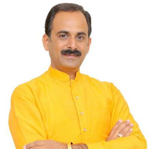
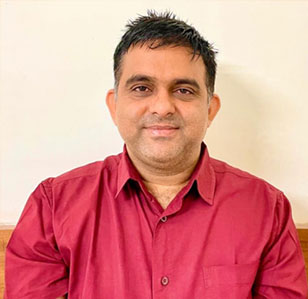
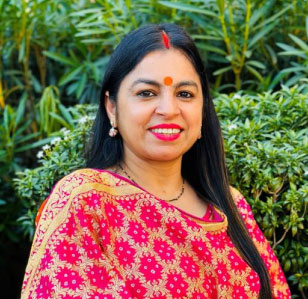
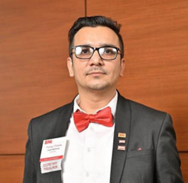
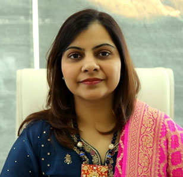

Previous Year Glimpse
About Tedx
A TEDx event is a community gathering where live TED-style presentations and performances are shared. TEDx events are totally organised and handled independently by each community. Each TEDx event's content and design are unique and produced separately, although they all share elements.
TED is a non-profit organisation dedicated to the spread of Ideas Worth Spreading. TED, which began as a four-day conference in California 30 years ago, has expanded to promote its objective via a variety of projects. The world's finest thinkers and doers are invited to talk for 18 minutes or less at the two annual TED Conferences. Many of these speeches are then made freely available on TED.com.
Register NowExpert Speakers

X
Acharya Manish
Founder and Managing Director at Shuddhi

X
Vineet Joshi
Chairman Joshi Foundation, Former State Secretary, BJP, Punjab, Former Media Advisor, Punjab

X
Sampat Sharma
Journalist, Author, Mountaineer, Speaker
X
Siddharth Das
Mindfulness Coach & Environment Warrior
X
Chumki Bose
Senior Most psychologist at Mindtribe
X
Sandeep Sahni
Partner at Sahayak Associates | Author | Motivational Speaker | Personal Finance Consultant

X
Pooja Chopra
Digital Marketing Entrepreneur | Motivational Speaker | Lifestyle Coach

X
Pranay Chawla
CEO, Founder at Cyber Chord

X
Preeti Jindal
Founder and Director, the touch clinic